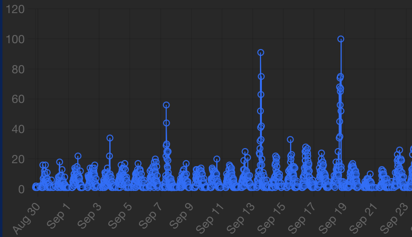

ACCENT = "var(--brand-teal)"
ACCENT2 = "var(--brand-red)"
GRID = "var(--border)"
// Numerical helpers
linspace = (a, b, n=401) => Array.from({length:n}, (_,i)=> a + (b-a)*(i/(n-1)))
// Log-Gamma (Lanczos) and friends (for stable PMFs/PDFs)
function logGamma(z){
const g = 7;
const p = [
0.99999999999980993, 676.5203681218851, -1259.1392167224028,
771.32342877765313, -176.61502916214059, 12.507343278686905,
-0.13857109526572012, 9.9843695780195716e-6, 1.5056327351493116e-7
];
if(z < 0.5){
return Math.log(Math.PI) - Math.log(Math.sin(Math.PI*z)) - logGamma(1 - z);
}
z -= 1;
let x = p[0];
for(let i=1; i<p.length; i++) x += p[i] / (z + i);
const t = z + g + 0.5;
return 0.5*Math.log(2*Math.PI) + (z+0.5)*Math.log(t) - t + Math.log(x);
}
logChoose = (n,k) => logGamma(n+1) - logGamma(k+1) - logGamma(n-k+1)
// Discrete PMFs (stable in log-domain)
binomPMF = (n,p,k) => Math.exp(logChoose(n,k) + k*Math.log(p) + (n-k)*Math.log(1-p))
poisPMF = (lambda,k) => Math.exp(k*Math.log(lambda) - lambda - logGamma(k+1))
geomPMF1 = (p,k) => p * Math.pow(1-p, k-1) // support {1,2,...}
negbinPMF = (r,p,x) => {
if(x < r) return 0;
return Math.exp(logChoose(x-1, r-1) + r*Math.log(p) + (x-r)*Math.log(1-p));
}
// Continuous PDFs
normPDF = (x,mu,sig) => Math.exp(-0.5*((x-mu)/sig)**2)/(sig*Math.sqrt(2*Math.PI))
lognormPDF = (x,mu,sig) => x<=0 ? 0 : Math.exp(-((Math.log(x)-mu)**2)/(2*sig*sig)) / (x*sig*Math.sqrt(2*Math.PI))
unifPDF = (x,a,b) => (x>a && x<b) ? 1/(b-a) : 0
expPDF = (x,lambda) => x>0 ? lambda*Math.exp(-lambda*x) : 0
gammaPDF = (x,a,b) => { // shape a, rate b
if(x<=0) return 0;
return Math.exp(a*Math.log(b) - logGamma(a) + (a-1)*Math.log(x) - b*x)
}
betaPDF = (x,a,b) => {
if(x<=0 || x>=1) return 0;
const logB = logGamma(a)+logGamma(b)-logGamma(a+b);
return Math.exp((a-1)*Math.log(x) + (b-1)*Math.log(1-x) - logB)
}
chisqPDF = (x,nu) => gammaPDF(x, nu/2, 1/2)
tPDF = (x,nu) => {
const logC = logGamma((nu+1)/2) - (0.5*Math.log(nu*Math.PI) + logGamma(nu/2));
return Math.exp(logC - ((nu+1)/2)*Math.log(1 + (x*x)/nu));
}
fPDF = (x,d1,d2) => {
if(x<=0) return 0;
const logC = logGamma((d1+d2)/2) - (logGamma(d1/2)+logGamma(d2/2)) + (d1/2)*Math.log(d1/d2);
return Math.exp(logC + (d1/2 - 1)*Math.log(x) - ((d1+d2)/2)*Math.log(1 + (d1/d2)*x))
}
// Convenient domain heuristics
domainNormal = (mu,sig) => [mu - 4*sig, mu + 4*sig]
domainGamma = (a,b) => [0, Math.max(5, a/b + 6*Math.sqrt(a)/b)]
domainExp = (lambda) => [0, Math.max(5, 6/lambda)]
domainBeta = [0,1]
domainPos = [0, 10]1 Overview of Machine Learning
TipRemark (A comment on terminology)
Remark 1.1 (A comment on terminology). MAS2909 introduced the term “distribution” as a synonym for “(cumulative) distribution function”, and this is classically how the term “distribution” has been used.
However, in recent decade(s) it has become more common to talk about probability measures as “distributions” and to make statements such as “a random variable X has distribution P” (a classical statistician would say “X has law P”).
In our opinion there are good reasons to prefer the modern terminology (for one, this is almost certainly the terminology that you learned at school), and so in this module we will use “distribution” exclusively to mean “probability measure” throughout.
To avoid confusion, if we ever need to refer to a (cumulative) distribution function we shall do so using the acronym CDF.
1.1 What is Machine Learning?
You might be surprised to learn that machine learning is not just a buzzword; it is a rich collection of mathematical concepts that can be rigorously studied.
1.1.1 Tasks
To unpack this definition we are going to recap some of the prerequisite mathematical concepts, which you should have already studied:
1.1.1.0.0.1 Set Notation I
A set is a collection of objects, e.g. \mathbb{N} is the set of natural numbers, \mathbb{N}_0 = \{0\} \cup \mathbb{N} is the set of non-negative integers, and \mathbb{R} is the set of real numbers.
Given a pair of sets, say \mathcal{X} and \mathcal{Y}, the Cartesian product of \mathcal{X} and \mathcal{Y} consists of all (ordered) pairs (x,y) where x is an element of \mathcal{X} and y is an element of \mathcal{Y}.
As a shorthand for set membership we can write x \in \mathcal{X} and y \in \mathcal{Y}. The Cartesian product of \mathcal{X} and \mathcal{Y} is denoted \mathcal{X} \times \mathcal{Y}. For example, \mathbb{R} \times \mathbb{R} is the two-dimensional Euclidean plane; we often abbreviate this to \mathbb{R}^2.
More generally we could consider d-fold Cartesian products such as \mathbb{R}^d.
1.1.1.0.0.2 Probability mass functions; Definition 7 in MAS2909
Let P be a probability distribution on a countable set \mathcal{X} = \{x_1, x_2, \dots \}.
Then P is characterised by its probability mass function p : \mathcal{X} \rightarrow [0,\infty). Indeed, P assigns an amount of probability P(S) = \sum_{x \in S} p(x) to each S \subset \mathcal{X}.
From the definition of a probability measure it must hold that p(\mathcal{X}) = \sum_{x \in \mathcal{X}} p(x) = 1.
1.1.1.0.0.3 Set Notation II
If a set \mathcal{X} is contained in another set \mathcal{Y} we write \mathcal{X} \subset \mathcal{Y}.
In this case, the indicator function of the set \mathcal{X} is the function 1_{\mathcal{X}} : \mathcal{Y} \rightarrow \{0,1\} for which f_{\mathcal{X}}(y) = 1 if and only if y \in \mathcal{X}.
For example, 1_{[0,1]}(x) is equal to 1 when 0 \leq x \leq 1 and equal to 0 if x lies outside this interval.
1.1.1.0.0.4 Probability Density Function
Let P be a sufficiently regular1 probability distribution on \mathbb{R}^d.
Then P is characterised by its probability density function p : \mathbb{R}^d \rightarrow [0,\infty). Indeed, P assigns an amount of probability P(S) = \int 1_S(\mathbf{x}) p(\mathbf{x}) \; \mathrm{d}\mathbf{x} to each set S \subset \mathbb{R}^d.
From the definition of a probability measure it must hold that \int p(\mathbf{x}) \; \mathrm{d}\mathbf{x} = 1.
Random variables were formally defined in MAS2909. Following standard convention, we will use upper-case Roman letters (e.g. X) for random variables and lower-case Roman letters (e.g. x) for specific values that could be taken by X.
1.1.1.0.0.5 Distribution of a Random Variable
Let X be a random variable taking values in a set \mathcal{X}.
The distribution of X is the probability distribution P for which P(S) = \mathrm{Prob}(X \in S) for each S \subset \mathcal{X}.
It is common to write X \sim P as shorthand for “X has distribution P”. Another reasonably common notation, which will be used in this module, is \mathcal{P}(\mathcal{X}) to denote the set of probability distributions on a set \mathcal{X}.
1.1.1.0.0.6 Probabilistic calculus
Which of the following equivalent statements do you think is most natural?
Z = X_1 + X_2 where X_1 \sim \mathcal{U}(a,b) and X_2 \sim \mathcal{N}(\mu,\sigma^2) are independent
Z has probability density function \frac{1}{b-a} \int 1_{[a,b]}(x) \frac{1}{\sqrt{2 \pi \sigma^2}} \exp\left(-\frac{1}{2 \sigma^2} (z - x - \mu)^2 \right) \; \mathrm{d}x
It of course depends on what we are trying to do - a good rule of thumb is to “use random variables for intuition, and use densities for computation”.
1.1.1.0.0.7 Joint Distribution
Given random variables X_1 and X_2, we can define a new random variable as \mathbf{X} = (X_1,X_2).
The distribution of \mathbf{X} is called the joint distribution of X_1 and X_2.
The concept naturally extends to more than two random variables as well.
1.1.1.0.0.8 Marginal Distribution; Section 2.3 of MAS2909
Given a random variable \mathbf{X} = (X_1,X_2) with probability (mass or) density function p.
The distribution of X_1 is called the marginal distribution of X_1; i.e. the probability distribution whose probability (mass or) density function is p_1(x_1) = \int p(\mathbf{x}) \; \mathrm{d}x_2, where \mathbf{x} = (x_1,x_2).
(For probability mass functions this integral should be replaced by a sum.)
Intuitively, the marginal distribution of X_1 is just the distribution of X_1 if we have not observed X_2.
1.1.1.0.0.9 Conditional Distribution; Section 2.4 of MAS2909
Given a random variable \mathbf{X} = (X_1,X_2) with probability (mass or) density function p, let p_1 and p_2 denote probability (mass or) density functions for the marginal distributions of X_1 and X_2.
The conditional distribution of X_1 given X_2 = x_2 is the probability distribution whose probability (mass or) density function is p(\mathbf{x}) / p_2(x_2), where \mathbf{x} = (x_1,x_2). The associated random variable is usually denoted X_1 | X_2 = x_2.
Intuitively, the conditional distribution of X_1 given X_2 represents our understanding of X_1 if we had observed the value of X_2 (e.g. our understanding of the weather given we had observed someone putting on a coat).
1.1.1.0.0.10 Independence; Section 2.5 of MAS2909
Two random variables X_1 and X_2 are independent if their joint distribution admits a probability (mass or) density function of the form p(\mathbf{x}) = p_1(x_1) p_2(x_2) where p_i is a probability density function for X_i and \mathbf{x} = (x_1,x_2).
Intuitively, if X_1 and X_2 are independent, then observing X_2 tells us nothing about X_1 (and vice versa).
The concept naturally extends to multiple random variables; we say X_1,\dots,X_n are independent if p(\mathbf{x}) = p_1(x_1) p_2(x_2) \cdots p_n(x_n) where \mathbf{x} = (x_1,\dots,x_n).
1.1.1.0.0.11 Notation for Expectations
Let P be a probability distribution on a set \mathcal{X} and let f : \mathcal{X} \rightarrow \mathbb{R} be a function of interest.
The following notations are all equivalent and widely-used:
- \mathbb{E}_{X \sim P}[f(X)]
- \mathbb{E}[f(X)] where X \sim P
- P(f)
- \int f \; \mathrm{d}P
- \int f(x) p(x) \; \mathrm{d}x (if P has a probability density function p)
- \sum_{x \in \mathcal{X}} f(x) p(x) (if P has a probability mass function p)
TipRemark (Disclaimer: MAS3716 Prequisite)
Remark 1.2 (Disclaimer: MAS3716 Prequisite). This course does not require MAS3716 and so we will not work rigorously with measure theory; any expectations that we write down will always be assumed to exist.
Now we are ready to unpack Definition 1.1. The easiest way is to see some examples of supervised learning tasks:
Example 1.8 (Regression) Regression models are powerful statistical tools used to understand the relationship between variables and make predictions. At their core, these models aim to identify how one or more independent variables (also often called covariates or predictors), influence a dependent variable (also often called a response variable) of interest.
For example, suppose we are interested in the (statistical) relationship between the frequency of pedestrians walking up the Queen Victoria Road next to campus and the time of day.

The independent variable here is the time of day, which we denote X, and the dependent variable is the frequency of pedestrians (i.e. the number of pedestrians per unit time), which we denote Y. It is reasonable to suppose X \in \mathbb{R} and Y \in [0,\infty).
One can freely access such data via the university’s Urban Observatory; the data shown below are from September 2025:

Predicting pedestrian footfall has important applications in transport, retail, and public safety; other independent variables that could be of interest in this context include the weather and whether or not large public events (e.g. the freshers’ fair) are being held. The goal in regression is to directly predict the dependent variable, so that \mathcal{Z} = \mathcal{Y} in the notation of Definition 1.1.
Simple examples of loss functions, which measure the loss incurred when a true response y is predicted as y', include L(y,y') = |y-y'| and L(y,y') = (y-y')^2.
Regression models are widely used in various fields, including economics for forecasting financial trends, in medicine for assessing treatment effects, and in social sciences for understanding behavioral patterns. They provide insights that are crucial for making informed decisions and formulating strategies.
Example 1.9 (Classification) Continuing on from Example 1.8, how do you think these footfall data on the Queen Victoria Road were collected?
It will not be a surprise to you that CCTV cameras are abundant in large cities such as Newcastle; take a look at the latest feeds for yourself:
https://api.newcastle.urbanobservatory.ac.uk/camera/
Counting the number of people in an image obtained from CCTV is an example of a classification task. Classification is a fundamental concept in machine learning that involves categorising data into predefined groups or classes.
Here \mathbf{X} is the CCTV image, which we can consider as an element of \mathbb{R}^{w \times h \times 3}, where the image is w pixels wide, h pixels high, and contains information for each of the red, green and blue colour channels, and Y is the number of pedestrians in the image, which is an element of \mathbb{N}_0 (here the “classes”).
The goal in classification is to directly predict the class, so that \mathcal{Z} = \mathcal{Y} in the notation of Definition 1.1.
The most common loss function used in classification applications is L(y,y') = 1 if y = y', and otherwise L(y,y') = 0; in fact, this is sometimes called the classification loss, or the 0-1 loss.
For this footfall application it might also be reasonable to use a loss function such as L(y,y') = |y-y'|, which is more tolerant to small counting errors than the 0-1 loss.
(Note that the scale of the loss is irrelevant; the supervised learning task is invariant to whether we use the loss function L(y,y') of the loss function cL(y,y') for any constant c > 0, since we only care about the function f for which the expected loss is minimised; cf. Definition 1.1.)

The independent variable here is the time of day, which we denote X, and the dependent variable is the frequency of pedestrians (i.e. the number of pedestrians per unit time), which we denote Y. It is reasonable to suppose X \in \mathbb{R} and Y \in [0,\infty).
One can freely access such data via the university’s Urban Observatory; the data shown below are from September 2025:
Classification is widely used in various fields, from spam detection in emails to diagnosing diseases in the medical field.
Classifiers are trained on a dataset where the categories, or labels, are already known; training helps the system learn the patterns and characteristics that differentiate one class from another (cf. Section 1.2).
1.1.2 Models
Now that we have seen several examples of supervised learning tasks, a natural question is how to solve them? That is, in the notation of Definition 1.1, how do we find a suitable function f : \mathcal{X} \rightarrow \mathcal{Z}?
The answer to this question will be broken down into two parts:
- First we will talk about how to identify a set \mathcal{F} whose elements are candidates for the function f in a given learning task; this set \mathcal{F} is called the machine learning model.
- Then we will see how to identify a suitable element f \in \mathcal{F}; this second step is called training the machine learning model, and we will defer this discussion to Section 1.2.
In practice the elements of \mathcal{F} are usually parametrised, denoted f_\theta : \mathcal{X} \rightarrow \mathcal{Y} for some parameters \theta from a suitable index set \Theta. It is then equivalent to specify either the set \mathcal{F} or the form of the parametric function f_\theta together with the set of allowed parameters \Theta.
1.2 Training
Students who have taken MAS3716 will understand that we require P to be absolutely continuous with respect to the Lebesgue measure on \mathbb{R}^d in order for a density to exist. An example of a probability distribution which fails this requirement is the distribution that places all mass at a single point. Such issues will not be the focus of this module; cf. Remark 1.2.↩︎